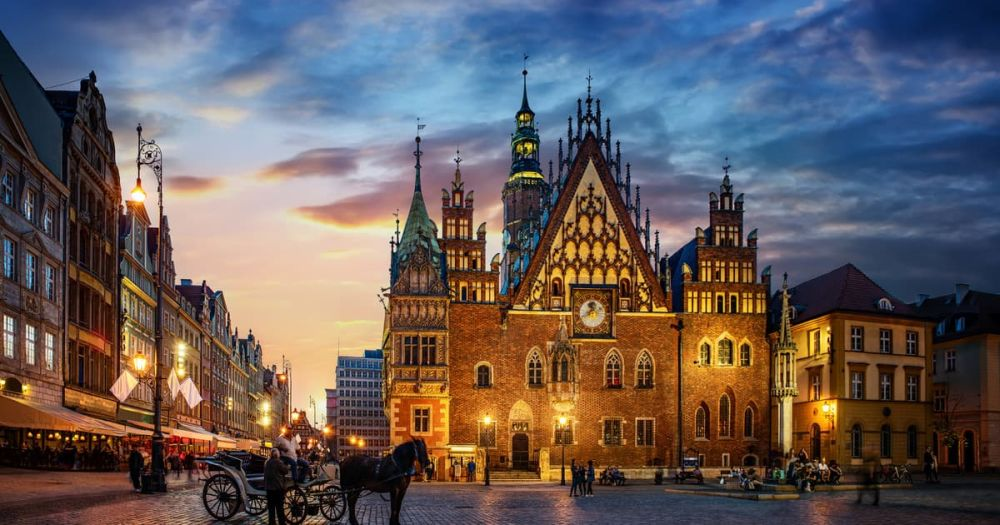

Descoperă Wrocław - Orașul pitoresc și cultural din Polonia
Wrocław este un oraș fermecător situat în Polonia, cu o bogată moștenire culturală și atracții captivante:
-

Centrul vechi atmosferic
Străzile pietruite și clădirile istorice creează o atmosferă autentică în centrul vechi al orașului.
-

Piața Rynek
Cu clădiri colorate și cafenele, piața este inima orașului și locul de întâlnire al localnicilor.
-

Catedrala Sf. Ioan Botezătorul
O capodoperă a arhitecturii gotice cu o panoramă impresionantă asupra orașului.
-

Ostrów Tumski
Cartierul istoric cu biserici vechi și străzi pitorești, perfect pentru plimbări relaxante.
-

Panorama Racławicka
Un impresionant ciclu de picturi panoramice care ilustrează Bătălia de la Racławice.
Concluzii
Wrocław este un oraș plin de farmec și istorie, oferind o experiență autentică și culturală.